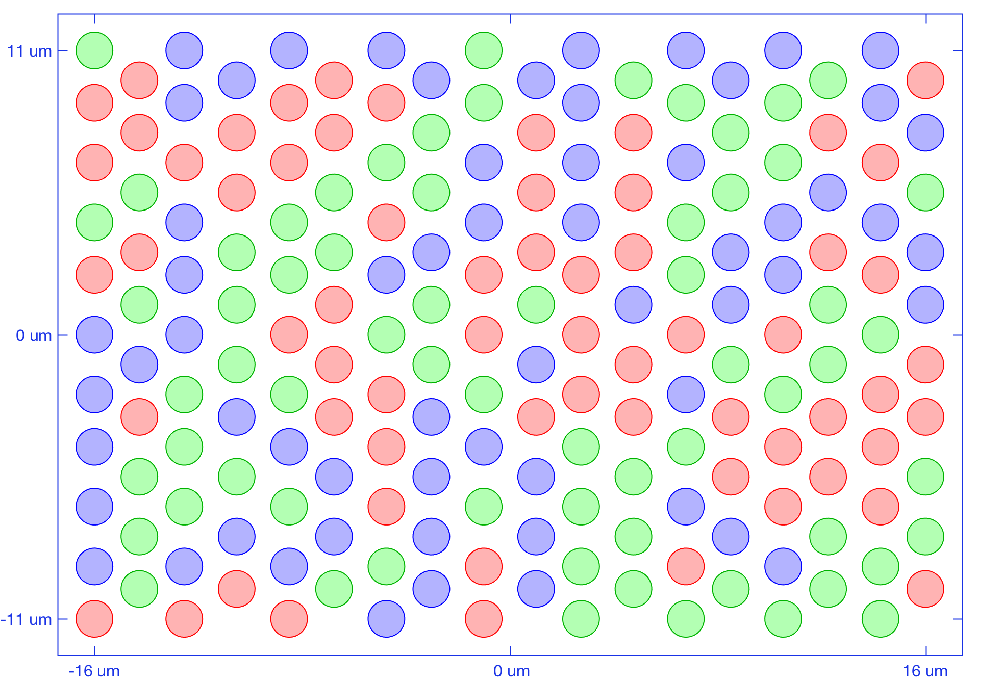
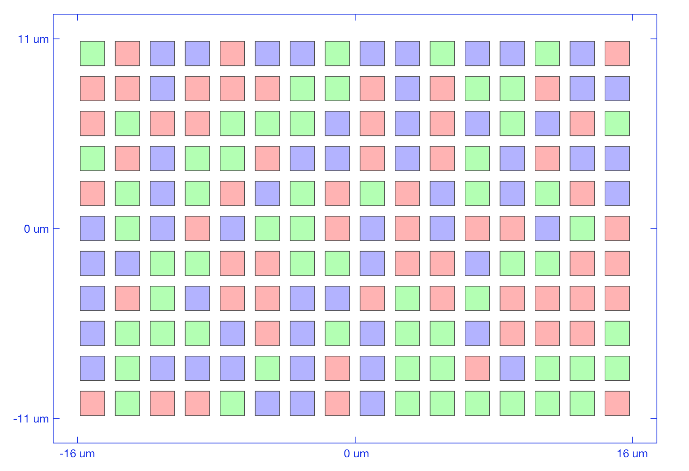
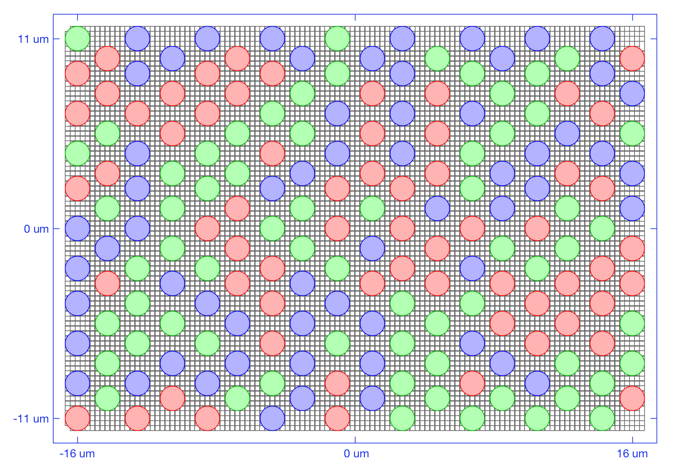
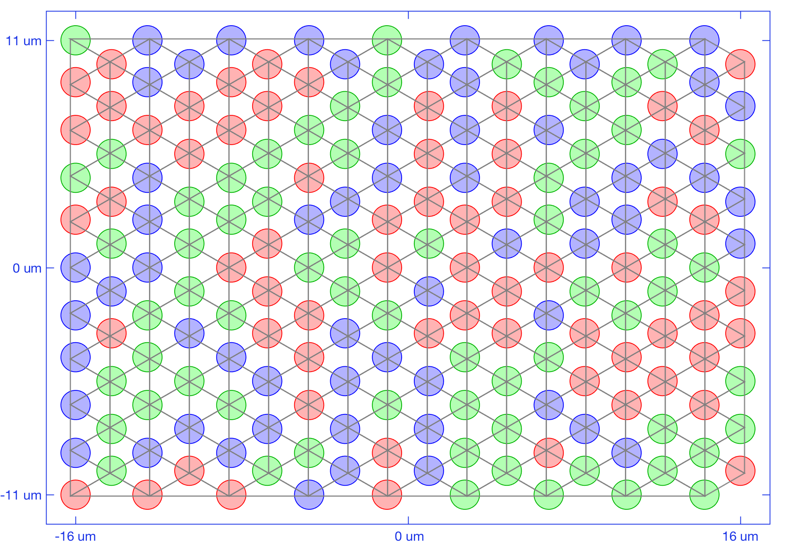

t_coneMosaicHex2
Visualizes the effects of different resampling factors. A resampling factor value of 1 gives a rectangular grid. A resampling factor of 2 gives pretty bad artifacts with largevinhomogenities. As the resampling factor is increased beyond 2, inhomogeneities start to disappear and the generated grid approximates a perfect hex grid.
NPC ISETBIO Team, Copyright 2016
Contents
Initialize
ieInit; clear; close all; % Interactive mode. Set to true to have it pause at useful places. % Default is false so we can autopublish without user input interactiveMode = false; % Freeze random number generator rng('default'); rng(219347);
Unit test 1: display different aspects of a hex mosaic in a 4 panel display, including
the hex mosaic, the originating rectangular mosaic, the hex grid used for sampling, and the null cones
Mosaic Parameters
mosaicParams = struct(... 'resamplingFactor', 7, ... % controls the accuracy of the hex mosaic grid 'spatiallyVaryingConeDensity', false, ... % whether to have an eccentricity based, spatially - varying density 'centerInMM', [0, 0], ... % mosaic eccentricity 'size', [11 16], ... % generate from a rectangular mosaic of 16 x 16 cones 'spatialDensity', [0 1/3 1/3 1/3]... % with a LMS density of of 0.33:0.33:0.33 ); % Generate the hex mosaic theHexMosaic = coneMosaicHex(mosaicParams.resamplingFactor, mosaicParams.spatiallyVaryingConeDensity, ... 'name', 'the hex mosaic', ... 'center', mosaicParams.centerInMM, .... 'size', mosaicParams.size, ... 'spatialDensity', mosaicParams.spatialDensity ... ); % Print some grid info and visualize it theHexMosaic.displayInfo(); theHexMosaic.visualizeGrid(); % Display the corresponding rectangular grid instead theHexMosaic.visualizeGrid(... 'panelPosition', [1 2], ... 'showCorrespondingRectangularMosaicInstead', true... ); % Overlay the null sensors as well theHexMosaic.visualizeGrid(... 'panelPosition', [2 1], ... 'overlayNullSensors', true... ); % Overlap the perfect hexagonal mesh theHexMosaic.visualizeGrid(... 'panelPosition', [2 2], ... 'overlayPerfectHexMesh', true... ); keepGoing = interactiveMode; while (keepGoing) commandwindow resamplingFactor = input(sprintf('\n<strong>Enter a new resampling factor [>= 1]. A negative exits the loop. New resampling Factor: </strong>')); if (isempty(resamplingFactor)) resamplingFactor = 1; end if (resamplingFactor <= 0) keepGoing = false; continue; end theHexMosaic.resampleGrid(resamplingFactor); % Print some grid info and visualize it theHexMosaic.displayInfo(); theHexMosaic.visualizeGrid(); % Display the corresponding rectangular grid instead theHexMosaic.visualizeGrid(... 'panelPosition', [1 2], ... 'showCorrespondingRectangularMosaicInstead', true... ); % Overlay the null sensors as well theHexMosaic.visualizeGrid(... 'panelPosition', [2 1], ... 'overlayNullSensors', true... ); % Overlap the perfect hexagonal mesh theHexMosaic.visualizeGrid(... 'panelPosition', [2 2], ... 'overlayPerfectHexMesh', true... ); end
Resampling grid. Please wait ... Done !
Mosaic info:
Size (microns): 32.0 (w) x 22.0 (h)
FOV (deg): 0.11 (w) x 0.07 (h)
Grid resampling factor: 7
Cone aperture (microns): 2.00 (w) x 2.00 (h)
Rectangular grid: 16 cols x 11 rows
Resampled grid: 112 cols x 77 rows
Total cones: 8624
Active cones: 189
Cone density (all cones): 12250000.0 cones/mm^2
Cone density (active cones): 268465.9 cones/mm^2
   